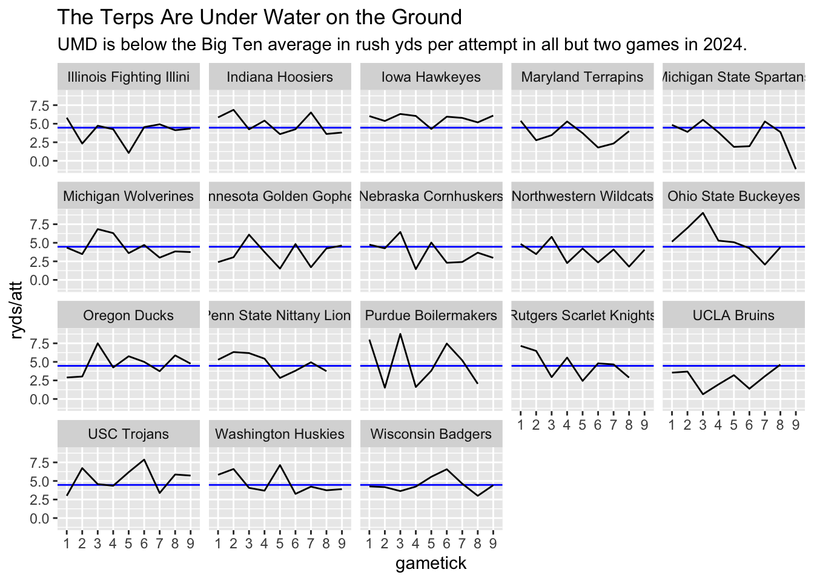
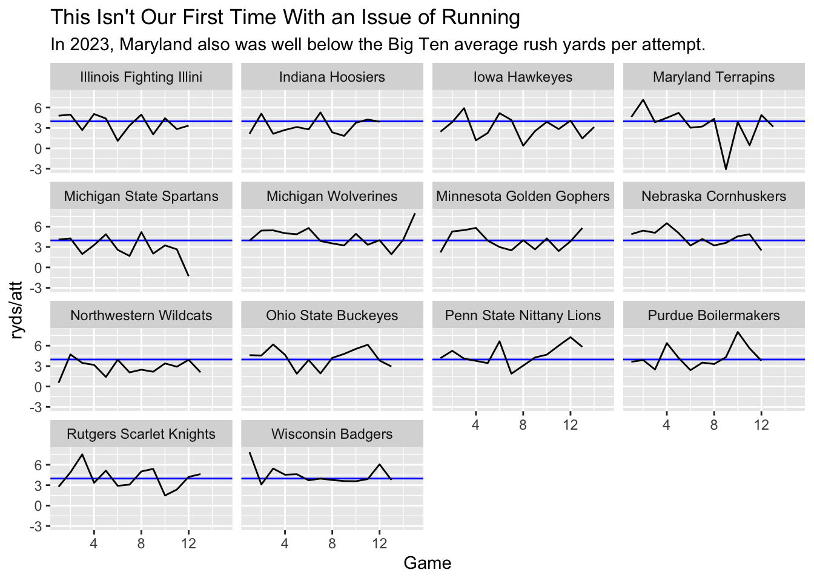
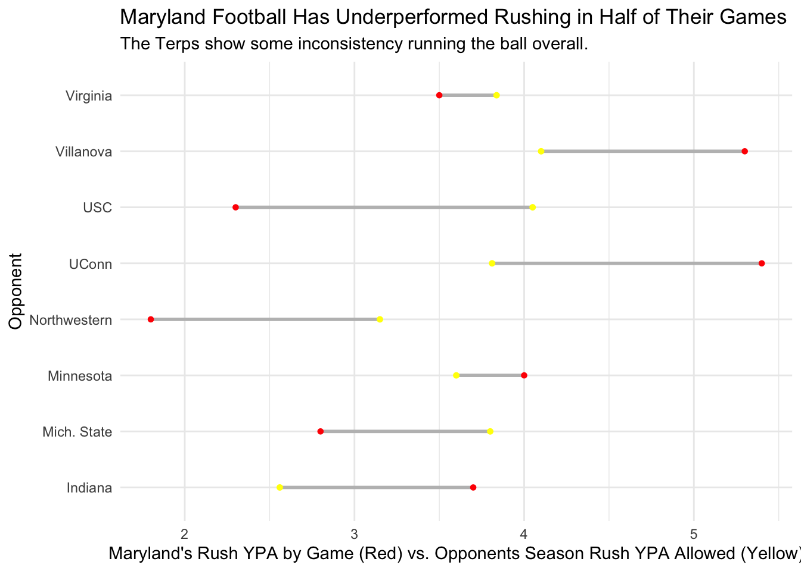

library(ggplot2)ggplot() +geom_hline(yintercept =4.465204, color ="blue") +geom_line(data=btrush, aes(x=`gametick`, y=`ryds/att`, group=TeamFull)) +facet_wrap(~TeamFull) +labs(title="The Terps Are Under Water on the Ground",subtitle ="UMD is below the Big Ten average in rush yds per attempt in all but two games in 2024.")

If you have watched Terps football game this season, you’ve seen the struggles that we have running the football. We can clearly see more of this in the above chart. Using RushYds/Attempt as a measure, we have been consistently below the conference average (blue line) throughout the year. As a fan myself, I just wonder what the problem is. This is one of the many reasons that we are amongst the bottom tier of teams in the Big Ten. Are defenses improving, or have we just not been able to figure this out?
Let’s first just do a check of what happened last year.
library(ggplot2)ggplot() +geom_hline(yintercept =3.972399, color ="blue") +geom_line(data=btrush23, aes(x=`Game`, y=`ryds/att`, group=TeamFull)) +facet_wrap(~TeamFull) +labs(title="This Isn't Our First Time With an Issue of Running",subtitle ="In 2023, Maryland also was well below the Big Ten average rush yards per attempt.")

So, this isn’t our first rodeo. I pretty much excuse those first few games anyway because they are the “buy” games against mediocre teams who we fill our schedule with. In the heat of the season against our Big Ten opponents, we haven’t performed - in both 2023 and 2024. If you’re curious about that huge dip in 2023, it was against Penn State where we had -49 rushing yards.
Let’s look at the other teams that we have struggled against this year. I want to take a look at their defenses and see if maybe we are just facing some tough teams and the Big Ten is getting better. Let’s see each team we’ve played this year and our rushing against them.
# A tibble: 8 × 2
Opponent `ryds/att`
<chr> <dbl>
1 Northwestern 1.79
2 Southern California 2.33
3 Michigan State 2.77
4 Virginia 3.46
5 Indiana 3.73
6 Minnesota 4
7 Villanova 5.3
8 Connecticut 5.39
Northwestern, USC, and MSU are the teams we struggled most against. At first look, I’m very dissapointed - these are three below .500 teams.
Now, let’s compare how Maryland has played each specific opponent this season. I’ll create a dumbbell chart comparing the opponents allowed rushing YPA, and our actual rushing YPA against them to see who we have over/underperformed against. I expect a good amount of underperformances.
Registered S3 methods overwritten by 'ggalt':
method from
grid.draw.absoluteGrob ggplot2
grobHeight.absoluteGrob ggplot2
grobWidth.absoluteGrob ggplot2
grobX.absoluteGrob ggplot2
grobY.absoluteGrob ggplot2
Code
ggplot() +geom_dumbbell(data=maryland_rush_diff, aes(y=Opponent, x=Maryland_Rush_YPA, xend=Opponent_YPA_Allowed),size =1,color ="grey",colour_x ="red",colour_xend ="yellow") +labs(title ="Maryland Football Has Underperformed Rushing in Half of Their Games", subtitle ="The Terps show some inconsistency running the ball overall.", x ="Maryland's Rush YPA by Game (Red) vs. Opponents Season Rush YPA Allowed (Yellow)") +theme_minimal()
Warning: Using the `size` aesthetic with geom_segment was deprecated in ggplot2 3.4.0.
ℹ Please use the `linewidth` aesthetic instead.

This surprises me a bit. As I mentioned, we underperformed severely against three low-ranked Big Ten teams. What stands out to me is that we actually overperformed against Indiana’s top ranked defense. To summarize what I see: inconsistency.
It really doesn’t matter who we play - you can’t really predict how well we are going to run the ball. I think this is an even worse thing for the Terps. Having no pattern in how our run game has performed means that it is harder to find a solution. I really wish we only played like crap against good opponents, because then you could point at it and say that we’re just getting locked up by great teams. Having bad days against conference bottomfeeders is unacceptable, and tells me that we have no sense of direction with pounding the rock.
While Billy Edwards has been throwing the ball decently, a balanced attack is key to winning games - I can’t even imagine the field day that our QB would have if there was any threat of a play action. I’ve been playing decent enough in my intramural flag football league - maybe I’ll try out at RB next year.